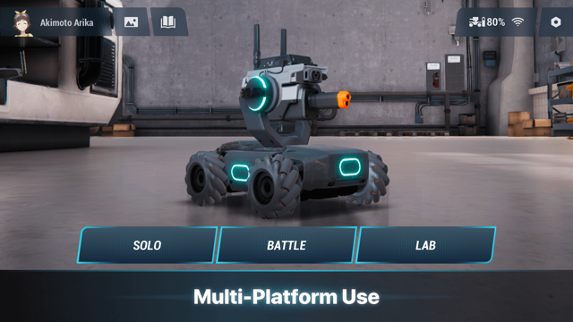

RoboMaster S1 新手指南：拆开包装第一次开机该干嘛
刚拿到 RoboMaster S1 不知道从哪下手？这篇从完全零基础带你走完开箱、激活、第一次射击和第一次编程，五分钟上手，三个最值得先玩的功能也一并说清。
这篇能带你从完全不懂到把 RoboMaster S1 开起来、射出去、编出第一段自己的程序——不需要任何遥控车、编程、机器人相关的基础，跟着做就行。
它到底是干嘛的
一句话类比：RoboMaster S1 是一台能开、能打、能编程的迷你遥控坦克。
说"坦克"因为它真有履带底盘，能原地转圈、斜着走，还带一个能上下左右转的云台（就是上面那根炮管和摄像头）。说"能打"因为它有红外发射器，能跟别的 S1 互相对战——机身六块装甲挨一下会掉血。说"能编程"因为出厂自带 Scratch 积木和 Python 两种编程环境，你可以让它看到红色标签就自动开过去、听到掌声就转头、血条掉光自己停下来。
它不是那种买回来装两节电池就玩完的玩具，也不是那种只有工程师才能上手的开发板。定位卡在中间：对小白来说是个比遥控车酷十倍的玩意儿，对想深入的人来说是个正经学机器人编程的入门平台——它的官网上有完整的产品介绍和社区分享，想买之前多了解也方便。
五分钟上手：从拆箱到第一次跑通
拆箱的时候你会看到：机甲主体一个、四根履带、一个智能中控模块、六块装甲、一个遥控器（EP 手柄，也可以用手机 App 代替）、一张视觉标签贴纸、一根充电线。
第一步：装履带。四根履带分别套进四个轮子的凹槽里，注意齿面要朝内卡进齿轮——装反了走不动，别担心，试一下就知道。
第二步：装装甲。六块装甲各有固定位置，机身侧面有编号，对号入座拧上螺丝就行。装甲上有击打检测器，挨一下会亮灯，这是对战时掉血的关键零件，别丢。
第三步：插中控、装电池。智能中控模块塞进机身中央的槽位，电池从底部推进去，听到"咔哒"一声就是锁住了。长按电源键三秒开机——听到"滴"的一声，机顶的 LED 灯从红变绿，就说明活了。
第四步：连手机、激活。手机应用商店搜 RoboMaster 下载，或者从官方下载拿安装包，打开后用 App 扫机甲机顶的二维码，按照提示完成激活（需要大疆账号，没有就注册一个，免费的）。激活完 App 里能看到机甲的 FPV 画面——就是云台摄像头实时拍的东西，画面里能看到你自己的手和地面，这时候你已经能操控它动了。

第五步：第一次射击。打开 App 里的"SOLO 单机驾驶"模式，选"定点射击挑战"——墙上提前贴好它自带的视觉标签贴纸，用虚拟摇杆对准标签，点右下角发射键。你会看到标签闪一下，App 右上角的分数涨了。恭喜，你已经完成了第一次射击。
以上五步正常情况五分钟以内能走完。卡住了最常见的三个原因：履带装反了、中控没插紧、手机 Wi-Fi 和机甲没在同一个网段——先查这三个。
上手后先玩这三个功能
机甲功能很多，但刚到手别贪多，先把下面三个玩明白，后面的路会顺很多。
定点射击挑战：先把基本功练扎实
这个功能在 SOLO 单机里，规则很简单：机器人停住，你操控云台瞄准墙上的视觉标签，命中得分，计时结算。
你会看到什么：FPV 画面中央有准星，标签贴在墙上，右上角实时显示 SCORE 和关卡进度，顶部计时器一直在跑。准星对准标签中心再扣扳机，命中率会明显提高。
这意味着什么：定点射击是所有对战模式的基础。乱斗里能不能打中移动的对手、征服模式里能不能在对方据点前守住，全看你的瞄准手感。这里练的不是反应速度，是云台的微调手感——履带不动、只动云台，把准星稳稳压在标签中心，连发不飘。
一个好用的练习法：先只求准，固定距离单发射击，每发都命中再谈连发；再求稳，连续二十发统计命中数，十八发以上算过关；再提速，每次比自己最好成绩快百分之十就行，别一下想快一倍。红外光束模式没有弹道成本，适合练准度。
拍照录像：它不止是玩具，也是台小相机
云台上那颗摄像头不只是用来开 FPV 的，它真能拍照录像。
你会看到什么：在 SOLO 模式里点一下媒体库图标，就能看到刚才随手录的片段和拍的照片。插上 microSD 卡之后，录像画质从 720p 升到 1080p，拍照也能到 2560×1440。
这意味着什么：很多人忽略这个功能，但它其实是个好玩的副产品。比如对战完录一段回顾、去公园开的时候拍一段第一人称视角的小车视频，剪辑一下发朋友圈比单纯说"我有一台机甲"酷多了。SD 卡最大支持 64GB，写入速度 10MB/s 以上就行，卡插在智能中控模块上。
一个小坑要注意：录像时如果你插着卡，1080p 原片是存在卡上的，App 内回放只显示 720p 画面。要拿全画质素材，得把卡拔出来用读卡器导出。
Scratch 积木编程：让它第一次听你的
这是从"玩"到"创造"的关键一步。机甲自带 Scratch 编程环境，和你在电脑上学的 Scratch 一模一样——只不过拖积木控制的不是屏幕里的小猫，是真实能动的机器。
你会看到什么：在 App 里打开 LAB 编程实验室，选 Scratch 模式，左侧是积木块分类，右侧是代码区。拖一块"当程序开始"的积木，再接一块"底盘前进 2 秒"，点运行，机甲真的往前开了两秒再停下。
这意味着什么：编程不只是写代码，是让机甲具备你想要的行为。比如"看到红色标签就开过去"、"听到掌声就转头"、"血量归零就自动停下来"——这些都是几块积木就能搭出来的。积木分类和后面 Python 编程的模块名是一一对应的，先把积木玩熟，以后切 Python 几乎是无缝过渡，想提前看看完整模块对照的可以翻一下RoboMaster文档。
官方给的第一个程序建议是血条灯：满血八格装甲，被击中掉一格 LED 灭一块，血量归零全灭然后停止。一个程序串起击打事件、LED 控制和变量判断三个概念，做完你就明白编程到底在干嘛了。
小白最常问的三个问题
Q：连不上手机怎么办？
先查三件事：机甲有没有开机（机顶灯是绿色才对）、手机 Wi-Fi 有没有切到机甲发出的热点、App 版本是不是最新的。都没问题还是连不上就重启机甲——长按电源键十秒强制关机，再开机重来。
Q：射击打中了但分数不动？
大概率是射击类型设置的问题。机甲有红外光束和水弹两种模式，你用红外模式但应用里可能设成了水弹，击打检测就对不上。进设置里看一下当前射击类型和你实际在用的是不是一致，改过来就好。
Q：电池能用多久？充电呢？
满电大概能玩二十五到三十分钟，对战模式耗电会快一点。充电用随盒的 Type-C 线插电脑或者手机充电器都行，充满大概两小时。出门玩的话建议备两块电池，底部有快速拆装结构，换电池不用拆机甲。
接下来去哪
把上面三个功能玩顺，你对这台机甲已经有了基本手感。下一步推荐找两三台同样有 S1 的朋友，拉到一块空场地开一局乱斗——真人对战和打电脑完全不是一个体验。
如果编程那块你玩出了兴趣，可以试试 Python 模式。Scratch 积木够用的时候别切 Python，但当你想让机甲按毫秒调度动作、批量控制多个部件、或者想把识别结果和复杂逻辑结合起来的时候，Python 就是那个该解锁的关卡。官方课程里有从图形化到 Python 的明确进阶路径，跟着走不会迷路。
这些学习资料我分别放在了GitHub、Gitee和GitCode上，国内访问选 Gitee 或 GitCode 速度更快。
祝你玩得开心——这台小机甲能给你的，远不止开箱那五分钟的新鲜劲。